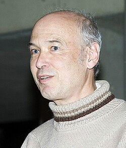

Pierre Deligne | |
|---|---|
 Deligne in March 2005 | |
| Born | 3 October 1944 Etterbeek, Belgium |
| Education | Université libre de Bruxelles (BS) Paris-Sud University (MS, PhD) |
| Known for | Proof of the Weil conjectures Perverse sheaves Concepts named after Deligne |
| Awards | Abel Prize (2013) Wolf Prize (2008) Balzan Prize (2004) Crafoord Prize (1988) Fields Medal (1978) |
| Scientific career | |
| Fields | Mathematics |
| Institutions | Institute for Advanced Study Institut des Hautes Études Scientifiques |
| Alexander Grothendieck | |
Doctoral students | Lê Dũng Tráng Miles Reid Michael Rapoport |
_(cropped).jpg){kind=link}
Pierre René, Viscount Deligne (French: [dəliɲ]; born 3 October 1944) is a Belgian mathematician. He is best known for work on the Weil conjectures, leading to a complete proof in 1973. He is the winner of the 1978 Fields Medal, 1988 Crafoord Prize, 2008 Wolf Prize and 2013 Abel Prize.
Early life and education
Deligne was born in Etterbeek, attended school at Athénée Adolphe Max and studied at the Université libre de Bruxelles (ULB), writing a dissertation titled Théorème de Lefschetz et critères de dégénérescence de suites spectrales (Theorem of Lefschetz and criteria of degeneration of spectral sequences). He completed his doctorate at the University of Paris-Sud in Orsay 1972 under the supervision of Alexander Grothendieck, with a thesis titled Théorie de Hodge.
Career
Starting in 1965, Deligne worked with Grothendieck at the Institut des Hautes Études Scientifiques (IHÉS) near Paris, initially on the generalization within scheme theory of Zariski's main theorem. In 1968, he also worked with Jean-Pierre Serre; their work led to important results on the l-adic representations attached to modular forms, and the conjectural functional equations of L-functions. Deligne also focused on topics in Hodge theory. He introduced the concept of weights and tested them on objects in complex geometry. He also collaborated with David Mumford on a new description of the moduli spaces for curves. Their work came to be seen as an introduction to one form of the theory of algebraic stacks, and recently has been applied to questions arising from string theory.[1] But Deligne's most famous contribution was his proof of the third and last of the Weil conjectures. This proof completed a programme initiated and largely developed by Alexander Grothendieck lasting for more than a decade. As a corollary he proved the celebrated Ramanujan–Petersson conjecture for modular forms of weight greater than one; weight one was proved in his work with Serre. Deligne's 1974 paper contains the first proof of the Weil conjectures. Deligne's contribution was to supply the estimate of the eigenvalues of the Frobenius endomorphism, considered the geometric analogue of the Riemann hypothesis. It also led to a proof of the Lefschetz hyperplane theorem and the old and new estimates of the classical exponential sums, among other applications. Deligne's 1980 paper contains a much more general version of the Riemann hypothesis.
From 1970 until 1984, Deligne was a permanent member of the IHÉS staff. During this time he did much important work outside of his work on algebraic geometry. In joint work with George Lusztig, Deligne applied étale cohomology to construct representations of finite groups of Lie type; with Michael Rapoport, Deligne worked on the moduli spaces from the 'fine' arithmetic point of view, with application to modular forms. He received a Fields Medal in 1978. In 1984, Deligne moved to the Institute for Advanced Study in Princeton.
Hodge cycles
In terms of the completion of some of the underlying Grothendieck program of research, he defined absolute Hodge cycles, as a surrogate for the missing and still largely conjectural theory of motives. This idea allows one to get around the lack of knowledge of the Hodge conjecture, for some applications. The theory of mixed Hodge structures, a powerful tool in algebraic geometry that generalizes classical Hodge theory, was created by applying weight filtration, Hironaka's resolution of singularities and other methods, which he then used to prove the Weil conjectures. He reworked the Tannakian category theory in his 1990 paper for the "Grothendieck Festschrift", employing Beck's theorem – the Tannakian category concept being the categorical expression of the linearity of the theory of motives as the ultimate Weil cohomology. All this is part of the yoga of weights, uniting Hodge theory and the l-adic Galois representations. The Shimura variety theory is related, by the idea that such varieties should parametrize not just good (arithmetically interesting) families of Hodge structures, but actual motives. This theory is not yet a finished product, and more recent trends have used K-theory approaches.
Perverse sheaves
With Alexander Beilinson, Joseph Bernstein, and Ofer Gabber, Deligne made definitive contributions to the theory of perverse sheaves.[2] This theory plays an important role in the recent proof of the fundamental lemma by Ngô Bảo Châu. It was also used by Deligne himself to greatly clarify the nature of the Riemann–Hilbert correspondence, which extends Hilbert's twenty-first problem to higher dimensions. Prior to Deligne's paper, Zoghman Mebkhout's 1980 thesis and the work of Masaki Kashiwara through D-modules theory (but published in the 80s) on the problem have appeared.
Other works
In 1974 at the IHÉS, Deligne's joint paper with Phillip Griffiths, John Morgan and Dennis Sullivan on the real homotopy theory of compact Kähler manifolds was a major piece of work in complex differential geometry which settled several important questions of both classical and modern significance. The input from Weil conjectures, Hodge theory, variations of Hodge structures, and many geometric and topological tools were critical to its investigations. His work in complex singularity theory generalized Milnor maps into an algebraic setting and extended the Picard-Lefschetz formula beyond their general format, generating a new method of research in this subject. His paper with Ken Ribet on abelian L-functions and their extensions to Hilbert modular surfaces and p-adic L-functions form an important part of his work in arithmetic geometry. Other important research achievements of Deligne include the notion of cohomological descent, motivic L-functions, mixed sheaves, nearby vanishing cycles, central extensions of reductive groups, geometry and topology of braid groups, providing the modern axiomatic definition of Shimura varieties, the work in collaboration with George Mostow on the examples of non-arithmetic lattices and monodromy of hypergeometric differential equations in two- and three-dimensional complex hyperbolic spaces, etc.
Awards
He was awarded the Fields Medal in 1978, the Crafoord Prize in 1988, the Balzan Prize in 2004, the Wolf Prize in 2008, and the Abel Prize in 2013, "for seminal contributions to algebraic geometry and for their transformative impact on number theory, representation theory, and related fields". He was elected a foreign member of the Academie des Sciences de Paris in 1978.
In 2006 he was ennobled by the Belgian king as viscount.[3]
In 2009, Deligne was elected a foreign member of the Royal Swedish Academy of Sciences[4] and a residential member of the American Philosophical Society.[5] He is a member of the Norwegian Academy of Science and Letters.[6]
Selected publications
- Deligne, Pierre (1974). "La conjecture de Weil: I". Publications Mathématiques de l'IHÉS. 43: 273–307. doi:10.1007/bf02684373. S2CID 123139343.
- Deligne, Pierre (1980). "La conjecture de Weil : II". Publications Mathématiques de l'IHÉS. 52: 137–252. doi:10.1007/BF02684780. S2CID 189769469.
- Deligne, Pierre (1990). "Catégories tannakiennes". Grothendieck Festschrift Vol II. Progress in Mathematics. 87: 111–195.
- Deligne, Pierre; Griffiths, Phillip; Morgan, John; Sullivan, Dennis (1975). "Real homotopy theory of Kähler manifolds". Inventiones Mathematicae. 29 (3): 245–274. Bibcode:1975InMat..29..245D. doi:10.1007/BF01389853. MR 0382702. S2CID 1357812.
- Deligne, Pierre; Mostow, George Daniel (1993). Commensurabilities among Lattices in PU(1,n). Princeton, N.J.: Princeton University Press. ISBN 0-691-00096-4.
- Quantum fields and strings: a course for mathematicians. Vols. 1, 2. Material from the Special Year on Quantum Field Theory held at the Institute for Advanced Study, Princeton, NJ, 1996–1997. Edited by Pierre Deligne, Pavel Etingof, Daniel S. Freed, Lisa C. Jeffrey, David Kazhdan, John W. Morgan, David R. Morrison and Edward Witten. American Mathematical Society, Providence, RI; Institute for Advanced Study (IAS), Princeton, NJ, 1999. Vol. 1: xxii+723 pp.; Vol. 2: pp. i–xxiv and 727–1501. ISBN 0-8218-1198-3.
Hand-written letters
Deligne wrote multiple hand-written letters to other mathematicians in the 1970s. These include
- "Deligne's letter to Piatetskii-Shapiro (1973)" (PDF). Archived from the original (PDF) on 7 December 2012. Retrieved 15 December 2012.
- "Deligne's letter to Jean-Pierre Serre (around 1974)". 15 December 2012.
- "Deligne's letter to Looijenga (1974)" (PDF). Retrieved 20 January 2020.
- "Deligne's letter to Millson (1986)" (PDF). Retrieved 11 November 2021.
Concepts named after Deligne
The following mathematical concepts are named after Deligne:
- Brylinski–Deligne extensions
- Deligne torus
- Deligne–Lusztig theory
- Deligne–Mumford moduli space of curves
- Deligne–Mumford stacks
- Fourier–Deligne transform
- Deligne cohomology
- Deligne motive[7]
- Deligne tensor product of abelian categories (denoted )[8]
- Deligne's theorem
- Langlands–Deligne local constant
- Weil–Deligne group
Additionally, many different conjectures in mathematics have been called the Deligne conjecture:
- Deligne's conjecture on Hochschild cohomology.
- The Deligne conjecture on special values of L-functions is a formulation of the hope for algebraicity of L(n) where L is an L-function and n is an integer in some set depending on L.
- There is a Deligne conjecture on 1-motives arising in the theory of motives in algebraic geometry.
- There is a Gross–Deligne conjecture in the theory of complex multiplication.
- There is a Deligne conjecture on monodromy, also known as the weight monodromy conjecture, or purity conjecture for the monodromy filtration.
- There is a Deligne conjecture in the representation theory of exceptional Lie groups.
- There is a conjecture named the Deligne–Grothendieck conjecture for the discrete Riemann–Roch theorem in characteristic 0.
- There is a conjecture named the Deligne–Milnor conjecture for the differential interpretation of a formula of Milnor for Milnor fibres, as part of the extension of nearby cycles and their Euler numbers.
- The Deligne–Milne conjecture is formulated as part of motives and Tannakian categories.
- There is a Deligne–Langlands conjecture of historical importance in relation with the development of the Langlands philosophy.
- Deligne's conjecture on the Lefschetz trace formula[9] (now called Fujiwara's theorem for equivariant correspondences).[10]
See also
- Brumer–Stark conjecture
- E7½
- Hodge–de Rham spectral sequence
- Logarithmic form
- Kodaira vanishing theorem
- Moduli of algebraic curves
- Motive (algebraic geometry)
- Perverse sheaf
- Riemann–Hilbert correspondence
- Serre's modularity conjecture
- Standard conjectures on algebraic cycles
References
- ^ Abramovich, Dan; Graber, Tom; Vistoli, Angelo (2008). "Gromov-Witten Theory of Deligne-Mumford Stacks". American Journal of Mathematics. 130 (5). Johns Hopkins University Press: 1337–1398. arXiv:math/0603151. doi:10.1353/ajm.0.0017. eISSN 1080-6377. ISSN 0002-9327. JSTOR 40068158. Retrieved 13 January 2024.
- ^ de Cataldo, Mark Andrea A.; Migliorini, Luca (October 2009). "The decomposition theorem, perverse sheaves and the topology of algebraic maps". Bulletin of the American Mathematical Society. 46 (4): 535–633. arXiv:0712.0349. doi:10.1090/S0273-0979-09-01260-9. ISSN 0273-0979.
- ^ Official announcement ennoblement – Belgian Federal Public Service. 18 July 2006 Archived 30 October 2007 at the Wayback Machine
- ^ Royal Swedish Academy of Sciences: Many new members elected to the Academy, press release on 12 February 2009 Archived 10 July 2018 at the Wayback Machine
- ^ "APS Member History". search.amphilsoc.org. Retrieved 23 April 2021.
- ^ "Gruppe 1: Matematiske fag" (in Norwegian). Norwegian Academy of Science and Letters. Retrieved 2 August 2022.
- ^ motive in nLab
- ^ Deligne tensor product of abelian categories in nLab
- ^ Yakov Varshavsky (2005), "A proof of a generalization of Deligne's conjecture", p. 1.
- ^ Martin Olsson, "Fujiwara's Theorem for Equivariant Correspondences", p. 1.
External links
- O'Connor, John J.; Robertson, Edmund F., "Pierre Deligne", MacTutor History of Mathematics Archive, University of St Andrews
- Pierre Deligne at the Mathematics Genealogy Project
- Roberts, Siobhan (19 June 2012). "Simons Foundation: Pierre Deligne". Simons Foundation. – Biography and extended video interview.
- Pierre Deligne's home page at Institute for Advanced Study
- Katz, Nick (June 1980), "The Work of Pierre Deligne", Proceedings of the International Congress of Mathematicians, Helsinki 1978 (PDF), Helsinki: Academia Scientiarum Fennica, pp. 47–52, ISBN 951-410-352-1, archived from the original (PDF) on 12 July 2012. An introduction to his work at the time of his Fields medal award.